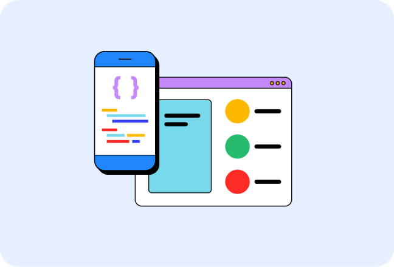

AI and the web
Discover resources created to help you
understand and build performant, web-first
experiences with AI.
Guidance to build modern web experiences that work on any browser.
We want to help you build beautiful, accessible, fast, and secure
websites that work cross-browser, and for all of your users. This
site is our home for content to help you on that journey, written by
members of the Chrome team, and external experts who
specialize in web development topics such as accessibility,
performance, design, and more.

Discover resources created to help you
understand and build performant, web-first
experiences with AI.

Interaction to Next Paint (INP) is now a Core
Web Vital metrics. Start measuring and
optimizing your site's INP.

Read up on the latest features and best practices when it comes to identity and
payment processing.
The web platform is a constantly evolving ecosystem of browser features and APIs for developers to make
websites that are easy and delightful to use. These pages are pathways for you to dive into each part of the web
platform on web.dev—at your pace.

HTML is the document layer of the web,
providing structure and
semantics for pages.
CSS is the presentation layer of the
web, and allows you to make your
web pages look exactly like you
imagine..
JavaScript adds rich interactivity to
web pages, so you can build websites
that help users to perform tasks and
accomplish goals.
New to the web platform? We've got you covered! Dive into each layer, with courses curated specifically for
beginners to HTML, CSS, and JavaScript.

course
A solid overview of HTML for developers,
from novice to expert level HTML

Read our blog to learn the latest news in web development, including new web platform features, updates to Baseline, AI, Core
Web Vitals, and more.
Get up to speed with the latest updates and
news on Baseline.
August 2026 Baseline monthly digest
Read about various happenings with Baseline during
August 2026.
Submit your proposals for Interop 2027
It's time to let us know which web platform features
should be part of Interop 2027.
New CSS color spaces and
functions in all major engines
All major engines now support the new CSS color
spaces and functions. Find out how they can bring
vibrancy to your designs.
Subgrid is now interoperable across all three major
engines. Find out how to use it..
Learn the latest tips and techniques to use
in your work, right now.
Adapt a font to your users' preferences, so they're
maximally comfortable reading your content
Improve web debugging experience with source maps
All major engines now support the new CSS color
spaces and functions. Find out how they can bring
vibrancy to your designs.
Improve web debugging experience with source maps
Build faster websites and apps by
understanding Core Web Vitals and other
metrics.
A collection of best practices for optimizing websites'
Core Web Vitals performance based on the state of
the web.
Explore common misconceptions about optimizing
Largest Contentful Paint by looking beyond image
optimization and considering factors like Time to First
Byte and resource load delay.
Best practices for measuring
Web Vitals in the field
Guidance for collecting and reporting Web Vitals
quickly and reliably.
Create capable web experiences.
A course that breaks down every aspect of modern
progressive web app development.
Dive into a fantastic collection of new patterns
for amazing apps, including clipboard patterns, file
patterns, and advanced app patterns.
Now that transform streams are supported in Safari,
Firefox, and Chrome they are finally ready for prime
time.
On the Chrome Developers site, explore capabilities
APIs.
Learn how to make your sites more
accessible for people with disabilities,
whether permanent, temporary, or
situational.
Our new course is a great entry point and reference for
accessibility topics.
This tutorial describes how to build an accessible main
navigation of a website. You learn about semantic
HTML, accessibility, and how using ARIA attributes can
sometimes do more harm than good.
An overview of three tools and techniques for testing
and verifying accessible color contrast of your design.
Read our interview with Melanie, a software engineer
who specializes in digital accessibility..
Find the latest techniques and best
practices for payments and helping users
safely log into your sites and apps.
Passkeys make user accounts safer, simpler, easier to
use.
TLearn more about Web Payments and how they work.
Create a sign in experience that uses passkeys while
still accommodating existing password users.
Maximize conversions by helping your users complete
address and payment forms as quickly and easily as
possible.
Get the latest news, techniques and updates straight to your inbox.
Country:
Don't worry, no spam here! Your information will only be used for web.dev and Chrome
related updates and our emails are typically no more than 1-2 times a month. You can
unsubscribe anytime.